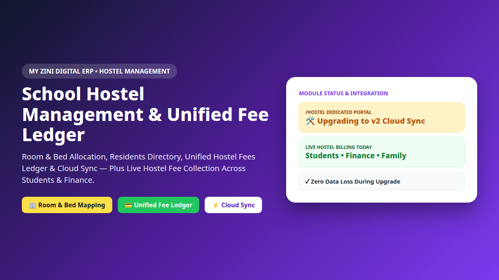
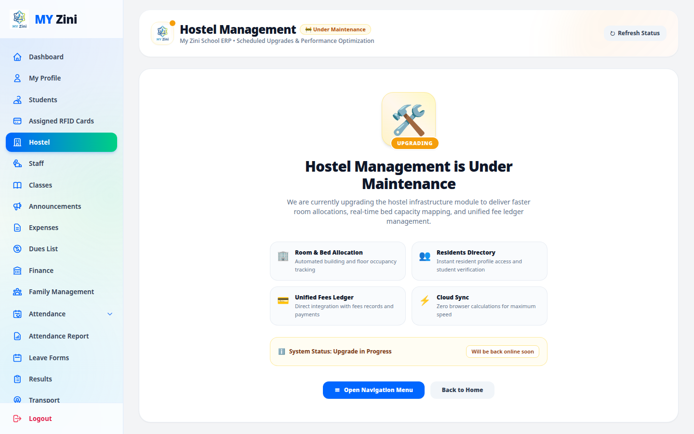
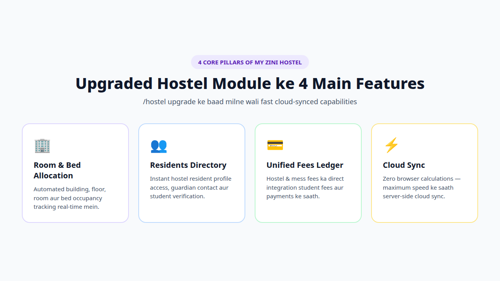
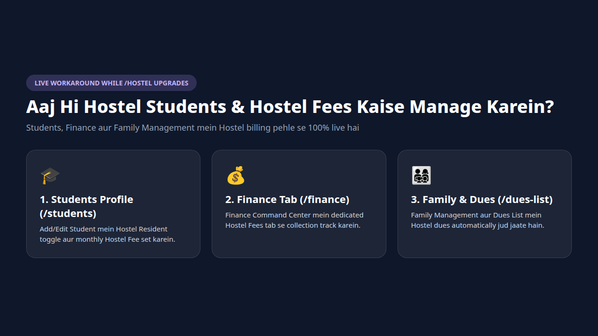
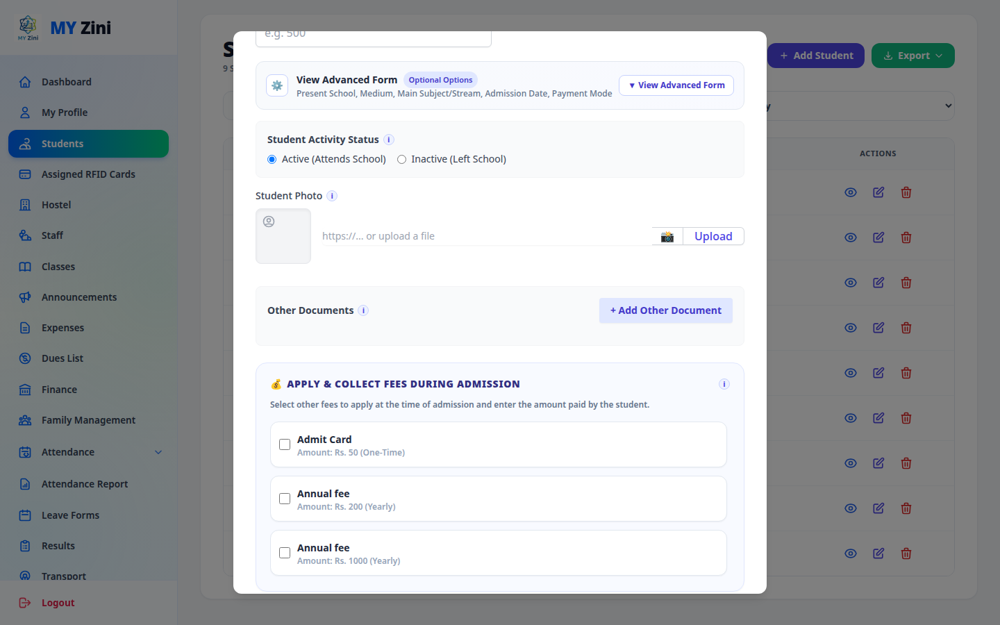
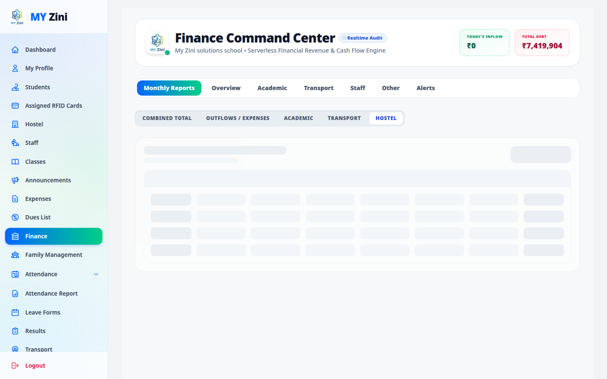
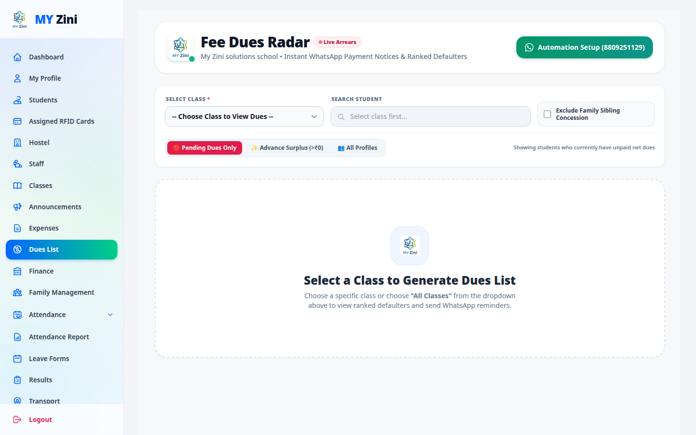
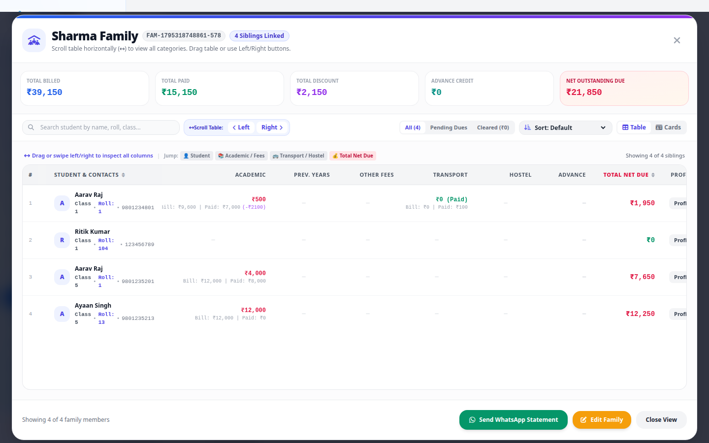
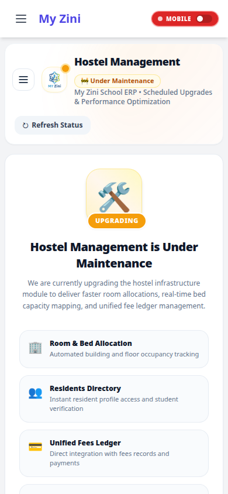
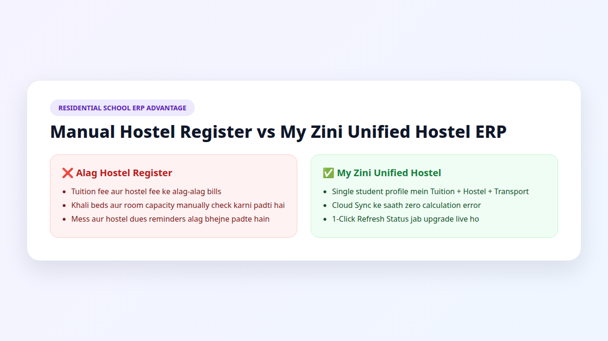

My Zini Digital ERP mein School Hostel Management aur Hostel Fees Kaise Manage Karein? (Complete Hinglish Guide)
Residential schools, boarding academies aur coaching hostels mein sirf admission lena hi kaafi nahi hota — building aur floor ke hisab se room-bed allocation, residents directory, warden verification, aur monthly hostel/mess fee ledger ko bina galti ke chalana sabse bada challenge hota hai. Jab humne My Zini Digital ERP ke live portal par /hostel route ko test kiya, toh humein pata chala ki dedicated Hostel Management module abhi Cloud Sync & Real-Time Bed Mapping Upgrade (Under Maintenance) par hai, jabki Hostel Student Enrollment aur Hostel Fee Collection pehle se hi /students, /finance, /dues-list aur /family-management mein 100% live chal rahe hain! Is honest aur detailed Hinglish guide mein hum dono cheezon ko real screenshots ke saath cover kar rahe hain.

⚡ TL;DR — Quick Summary (AI & Reader Snapshot)
- Dedicated Route (
/hostel): Abhi🚧 Under Maintenance (UPGRADING)state mein hai jahan 4 upgraded pillars launch ho rahe hain: Room & Bed Allocation, Residents Directory, Unified Fees Ledger, aur Cloud Sync. - Live Controls on
/hostel:↻ Refresh Status,☰ Open Navigation Menu, aurBack to Home. - Aaj Hi Live Hostel Billing Kaise Karein?
/studentsmein student profile ke andar Hostel status aur fee set karein,/financeke Hostel tab mein collection dekhein, aur/dues-list//family-managementmein dues track karein. - Zero Data Loss: Upgrade complete hote hi aapke saare existing hostel students aur fee records automatically naye Cloud Sync Hostel portal mein dikhne lagenge.
1. Live /hostel Portal Overview: Upgrade Status aur 4 Core Pillars
Jab aap left sidebar se Hostel (/hostel) par click karte hain, toh aapko Hostel Management — 🚧 Under Maintenance page dikhai deta hai. Top bar par "My Zini School ERP • Scheduled Upgrades & Performance Optimization" ke saath ek ↻ Refresh Status button diya gaya hai taaki upgrade live hote hi aap bina logout kiye turant naya module check kar sakein.
Page ke main card par 🛠️ UPGRADING — Hostel Management is Under Maintenance likha hota hai aur saaf bataya gaya hai ki yeh upgrade faster room allocations, real-time bed capacity mapping, aur unified fee ledger management ke liye kiya ja raha hai.


🏢 Room & Bed Allocation
Automated building and floor occupancy tracking — kis building ke kis floor par kaunsa room aur bed khali ya occupied hai, iska real-time map.
👥 Residents Directory
Instant resident profile access and student verification — warden ke liye har hosteller ka photo, class, parent phone aur emergency contact.
💳 Unified Fees Ledger
Direct integration with fees records and payments — alag hostel register ki zaroorat nahi, sab kuch ek hi student fee ledger mein.
⚡ Cloud Sync
Zero browser calculations for maximum speed — saare heavy calculations server-side cloud par honge jisse mobile aur low-end PC par bhi page fast chalega.
2. Aaj Hi Live ERP mein Hostel Students aur Hostel Fees Kaise Manage Karein?
Sabse achhi baat yeh hai ki agar aapke school mein hostel facility pehle se chal rahi hai, toh aapko /hostel upgrade complete hone ka intezaar karne ki zaroorat nahi hai! My Zini Digital ERP ke 4 active modules mein hostel enrollment aur hostel fee billing pehle se hi 100% live hai:

Step 1: Student Management (/students) mein Hostel Resident Set Karein
/students page par naya admission karte waqt (Add Student) ya kisi existing student ko edit karte waqt form ke andar Hostel allocation aur Hostel Fee fields milte hain. Yahan aap student ki monthly hostel & mess fee enter karke save kar sakte hain.


Step 2: Finance Command Center (/finance) mein Hostel Fees Tab
/finance module mein aapko 7 department tabs milte hain — jinmein se ek dedicated Hostel Fees tab hai! Yahan accountant ko alag se dikhai deta hai ki hostel department mein kitni fees collect hui aur kitni pending hai.
Step 3: Dues List (/dues-list) aur Family Management (/family-management)
Har hosteller ki baaki fees automatically Dues List mein jud jaati hai jahan se aap WhatsApp reminder bhej sakte hain. Saath hi Family Management ke Sibling Breakdown table mein bhi alag se HOSTEL column maujood hai taaki agar ek bhai hostel mein rehta ho aur doosra day-scholar ho, toh parent ko bilkul clear bill dikhe.



3. Mobile Responsive Experience aur Manual Hostel Register se Tulna
Hostel warden aur Principal aksar hostel campus mein ghoomte hue mobile phone se system check karte hain. /hostel page par mobile screen (390px) ke liye dedicated ☰ Open Navigation Menu aur ↻ Refresh Status buttons cleanly stack hote hain. Neeche live mobile screenshot aur Unified Hostel ERP comparison dekhein:


Quick Reference Table: Hostel Management & Live Integrations
| Module / Route | Current Status | Hostel ke Liye Kya Use Karein? |
|---|---|---|
/hostel | 🛠️ Upgrading (Cloud Sync v2) | Room & Bed Allocation, Residents Directory, Unified Fees Ledger |
/students | ✅ 100% Live | Student ko Hostel Resident mark karna aur Monthly Hostel Fee set karna |
/finance | ✅ 100% Live | Hostel Fees department tab mein total collection & receipts dekhna |
/dues-list | ✅ 100% Live | Hostel pending dues par WhatsApp automated reminders bhejna |
/family-management | ✅ 100% Live | Siblings ke composite bill mein alag HOSTEL fee column dekhna |
Frequently Asked Questions (FAQs)
1. "/hostel" page par "Under Maintenance" kyun dikh raha hai?
My Zini Digital ERP ki engineering team Hostel module ko naye Cloud Sync architecture par upgrade kar rahi hai taaki bade residential schools mein bhi hazaron beds, rooms aur buildings ka data zero lag ke saath load ho sake. Upgrade poora hote hi ↻ Refresh Status dabane par naya portal live ho jaayega.
2. Kya upgrade ke dauran hamare school ke Hostel Students ka data surakshit rahega?
Haan, 100% surakshit! Sabhi students ke hostel profiles, hostel fees, aur payment receipts cloud database mein stored hain aur /students, /finance, aur /family-management mein bina kisi rukawat ke kaam kar rahe hain.
3. "Room & Bed Allocation" pillar mein kya-kya naye features milenge?
Upgraded version mein aap alag-alag Hostel Buildings (e.g. Boys Hostel A, Girls Hostel B), Floors, Room Numbers aur per-room Bed Capacity set kar paayenge. System automatically dikhayega ki kis room mein kitne beds khali hain aur kaunse student ko kaunsa bed allot hai.
4. "Residents Directory" Hostel Warden ke liye kaise madadgar hogi?
Residents Directory mein warden ko sirf hostel mein rehne wale students ki filtered list milegi — unke Room Number, Class, Parent Mobile Number aur Emergency Contact ke saath, taaki raat ki attendance ya medical emergency mein turant verification ho sake.
5. "Unified Fees Ledger" ka sabse bada fayda kya hai?
Pehle schools ko tuition fee alag software mein aur hostel/mess fee alag register mein rakhni padti thi. Unified Fees Ledger ke saath Hostel Fee seedha student ke main fee ledger, /finance aur /dues-list se jud jaati hai, jisse parent ko ek hi receipt aur ek hi WhatsApp reminder milta hai.
6. "Cloud Sync" (Zero browser calculations) ka kya matlab hai?
Purane web apps mein jab 500+ students ka hostel data load hota tha toh browser slow ho jaata tha. Cloud Sync ke saath saari calculations server par hoti hain, jisse page instant open hota hai chahe aap 4G mobile par hon ya school office ke purane computer par.
7. "☰ Open Navigation Menu" aur "Back to Home" buttons kis kaam aate hain?
Maintenance screen par atakne ke bajaye aap ☰ Open Navigation Menu se sidha sidebar kholkar kisi bhi doosre live module (jaise Students, Finance ya Attendance) par ja sakte hain, ya Back to Home dabakar seedha Dashboard par laut sakte hain.
8. Hostel students ki attendance aur gate pass kaise track karein?
Aap Assigned RFID Cards (/assigned-rfid-cards) aur Attendance (/attendance) modules ka use karke hostel students ki daily attendance aur entry-exit logs track kar sakte hain, aur Leave Forms (/leave-management) se unki ghar jaane ki chhutti approve kar sakte hain.
9. Apne school ke liye My Zini Digital ERP kaise shuru karein?
Aap Digital ERP Registration Form par jaakar sirf ₹100 Registration Fee ke saath apna school register kar sakte hain aur Residential + Day School dono ko ek hi ERP par manage kar sakte hain.
10. Kya Hostel aur Mess ka kharcha School Expenses (/expenses) mein track kar sakte hain?
Haan bilkul! Hostel mess ration, kitchen gas, aur hostel electricity bill ka rozana kharcha aap Expenses (/expenses) mein 🍎 Food & Mess aur ⚡ Electricity / Bill Quick Suggestions use karke record kar sakte hain.
11. Kya Generator Tools se Hostel Fees ka Bill ya ID Card ban sakta hai?
Haan! Generator Tools (/generator-tools) mein maujood 4-in-1 Fees Dues Bill mein student ki academic fees ke saath hostel dues bhi automatically include hokar print ho jaate hain.
12. Hostel module live hua ya nahi, yeh kaise check karein?
Bas /hostel page kholkar top-right mein maujood ↻ Refresh Status button par click karein. Jaise hi upgrade complete hoga, page reload hokar naya Room & Bed Allocation dashboard dikha dega.
13. Kya Hostel Fees ko Family Sibling Discount ke saath adjust kiya ja sakta hai?
Haan bilkul! Family Management (/family-management) ke sibling breakdown table mein HOSTEL ka alag column hota hai aur TOTAL DISCOUNT aur ADVANCE CREDIT poore family ledger par apply hota hai. Agar do bhai-behen hostel mein rehte hain, toh unka combined bill ek hi WhatsApp statement mein parent ko mil jaata hai.
14. Boarding students ke parents ko hostel fee reminder kaise bhejein?
Aap Dues List (/dues-list) par jaakar kisi bhi student ka total pending balance (jisme tuition + hostel + transport sab shamil hota hai) dekh sakte hain aur 1-click mein WhatsApp reminder bhej sakte hain. Isse parents ko alag-alag departments se phone nahi aate aur ek hi jagah saaf hisab milta hai.
15. Hostel students ka alag ID Card aur Hostel Fee Slip kaise print karein?
Generator Tools (/generator-tools) mein aapko ID Card Generator aur 4-in-1 Fees Dues Bill dono milte hain. Aap student ke remark ya address field mein unka Hostel Wing aur Room Number add karke directly ID card par print kar sakte hain, aur QR-enabled fee slip par hostel dues bhi show kar sakte hain.
16. Hostel Warden aur Mess In-charge ke liye Staff Management (/staff) kaise kaam karta hai?
Aap hostel warden, night guard, aur mess cook ko Staff Management (/staff) mein add kar sakte hain — unki monthly salary, daily absent fine aur portal access ke saath. Isse pure residential campus ka teaching aur hostel staff ek hi HR ledger mein manage hota hai.
17. Kya hostel students ke liye alag Announcements / Notice bheje ja sakte hain?
Haan! Announcements (/announcements) ke FCM Broadcast Hub mein aap Student targeting mode use karke sirf hostel mein rehne wale students ko select kar sakte hain — jaise hostel inspection, mess menu change, ya Sunday outing timing ka alert turant unke phone par bhej sakte hain.
18. Hostel ki daily attendance aur evening roll-call kaise track karein?
Residential schools mein warden Assigned RFID Cards (/assigned-rfid-cards) ya Attendance (/attendance) module ka use karke subah aur shaam ki attendance verify kar sakte hain. Agar koi student hostel se ghar jaa raha ho, toh parent ko Leave Forms (/leave-management) par digital approval lena anivarya banaya ja sakta hai.
19. Kya Hostel upgrade ke baad purane students ko dubara enter karna padega?
Bilkul nahi! Jab /hostel ka Cloud Sync v2 upgrade live hoga, toh jitne bhi students ke profile mein hostel fee ya hostel resident flag pehle se set hai, woh sabhi automatically naye Residents Directory aur Unified Fees Ledger mein sync ho jaayenge. Aapko sirf unka Room & Bed Number map karna hoga.
20. Chhote aur bade residential schools ke liye My Zini ERP kyun best hai?
Kyunki sirf ₹100 Registration Fee ke saath aapko ek hi platform par Admissions, Hostel Billing, Mess Expense Tracking, RFID Gate Security, Leave Desk, aur WhatsApp Fee Recovery sab kuch mil jaata hai — woh bhi bina kisi heavy server cost ya complex setup ke.
21. Hostel aur Day-Scholar students ke beech report kaise alag karein?
Aap /finance mein Hostel Fees department tab aur /students ke search & profile filters ka use karke hostel students ko day-scholars se alag dekh sakte hain. Saath hi /family-management mein bhi HOSTEL column sirf unhi bachchon ki fee dikhata hai jo hostel facility le rahe hain.
22. Kya Hostel Warden ko limited access diya ja sakta hai?
Haan! Staff Management (/staff) aur Settings (/settings) ke through aap staff members ke liye Portal Login aur role permissions manage kar sakte hain taaki hostel warden sirf zaroori student aur attendance records hi access kar sakein.
23. Hostel students ka annual fee data aur backup kaise download karein?
Aap Data Center (/data-center) aur /students ke Export tools se kabhi bhi Excel (XLSX), CSV ya JSON format mein poore school aur hostel students ka complete backup download kar sakte hain.
Real Residential School Checklist: My Zini ERP ke Saath
1. Admission ke Waqt Hostel Fee Set Karein
/students mein naye boarder student ka admission karte hi unki monthly Hostel Fee daal dein taaki har mahine automatic bill generate ho.
2. Monthly Hostel Collection Review
Har mahine ki 10 tarikh ko /finance ke Hostel tab aur /dues-list ko check karke pending hostel fees par WhatsApp reminder bhejein.
3. Mess Ration & Hostel Bills Tracking
Kitchen sabzi, grocery, LPG aur hostel bijli bill ko /expenses mein Food & Mess category ke andar record karein taaki net profit clear rahe.
4. Hostel Outpass via Leave Forms
Kisi bhi boarder student ko weekend par ghar jaane dene se pehle /leave-management par parent-signed application zaroor verify karein.
Pro Tip: Jab tak /hostel ka v2 Room & Bed Allocation upgrade roll out ho raha hai, tab tak aap /students mein student ke address ya remarks field mein unka Room Number (e.g. Room 204 - Boys Hostel) likhkar rakh sakte hain taaki search aur ID card par turant dikhai de. Saath hi har mahine ↻ Refresh Status dabakar naya Hostel Dashboard check karte rahein.